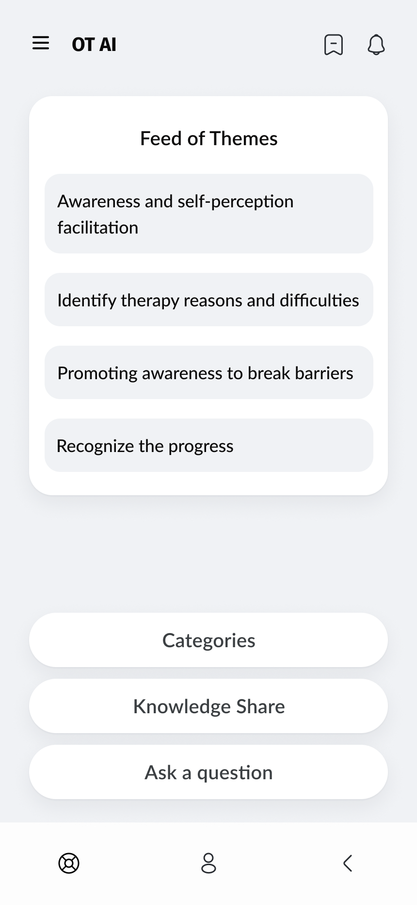
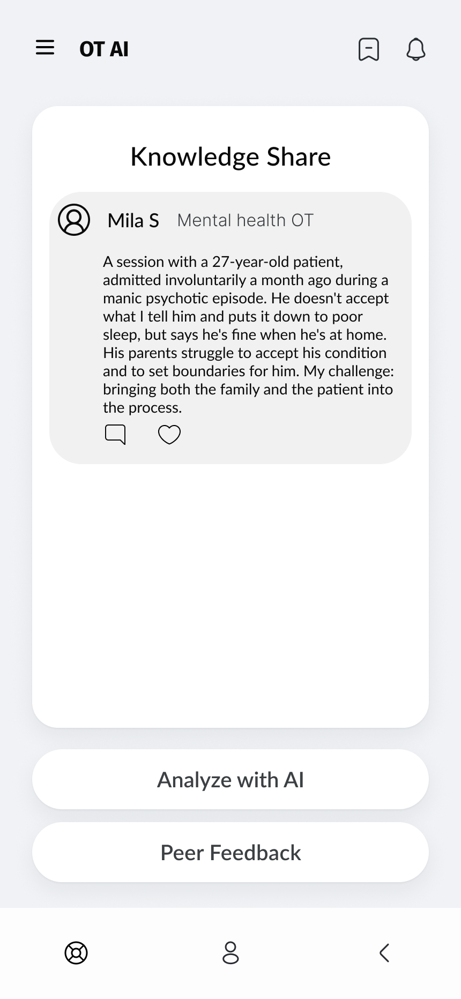
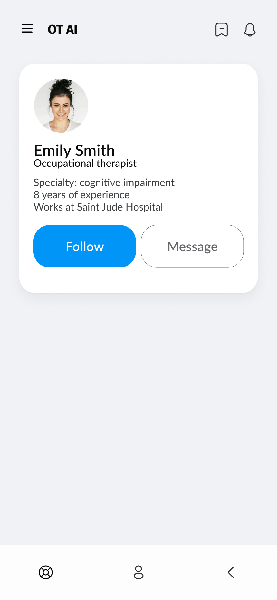
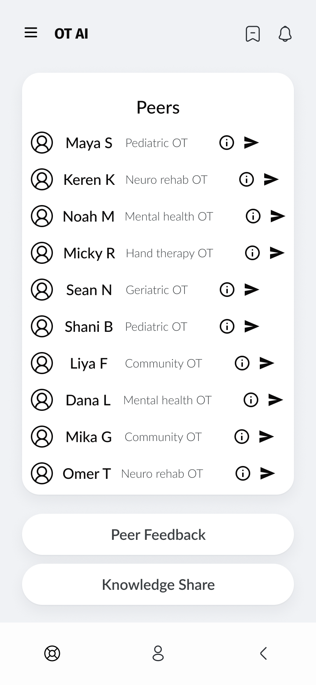
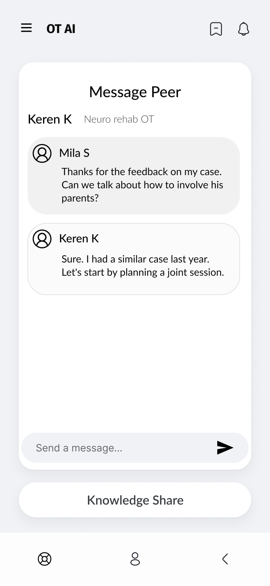

The plan was an answer engine for occupational therapists. In interviews, therapists said they wanted help thinking a case through, so the AI was built to ask them questions.
Role
Sole UX/UI Designer & Researcher
Team
Academic research team
Timeline
2022 – 2026
Delivered as
ChatGPT agent
Product direction
Answer bot → reflective AI
Built as a ChatGPT agent on my findings
Real conversations evaluated
36
Against 8 clinical rubrics
In-depth interviews
7
Designed, ran and transcribed myself
Did you know?
Therapists didn't want answers. They wanted help thinking.
The team planned an answer engine. In the interviews I pushed for, therapists asked for an AI that "leads to investigation", not one that hands out answers. So the AI asks.
What I'd do differently
I designed the whole app before we knew it would be built.
It became a ChatGPT agent instead. Next time I'd write the conversation rules first and test them with therapists as scripted chats.
01The problem
The team assumed junior therapists lacked knowledge and needed fast answers. The real problem was isolation: therapists at every level, some with almost 20 years' experience, can't discuss patients with anyone, so they work through hard cases alone.
The committee wanted survey answers, and the team felt the survey, group sessions and workshops were enough. I pushed for interviews, then designed, ran and transcribed them myself.
Interviews
7
Designed, ran and transcribed myself
Most experienced participant
~20 years
Still working through hard cases alone
Main clinical themes
4
Narrowed from many, with the researchers
Participant #2
“If I tell it a patient just walked in in a bad mood, what do I do, how would it know what to answer? There are so many solutions. So I think it should ask me questions.”
The idea that the AI should ask came from the therapists themselves.
What the research found, and what each finding led to
01Many difficulties came down to 4 main clinical themes →each session starts from a theme
02Therapists wanted to be asked, not answered →the AI responds with reflective questions
03Sensitive cases can't be discussed with anyone →a peer community, anonymous by default
02What I decided
01 · From the group sessions
Start every session from a clinical theme
Found
The group sessions showed that many difficulties came down to 4 main clinical themes.
Chose
Each session starts with picking a theme, so the conversation has a focus from the first message.

1Pick a theme

2A case in that theme
3Chat with Amanda
02 · From the interviews
An AI that asks therapists questions
Found
Therapists asked for help thinking, not answers. As participant #7 put it: "You're not spoon-feeding me, you're moving me forward."
Chose
We dropped the planned answer search engine. The AI responds with reflective questions.
03 · Privacy by default
A peer community, anonymous by default
Found
A bot alone wasn't enough for therapists to feel confident, and patient privacy made sharing risky.
Chose
Therapists can share a whole session with verified peers for feedback. Partial anonymity is on from the start.
Where a case goes after the feed: to a peer, and into a conversation.

Each therapist's profile shows their specialty, experience and where they work.

Peers are listed by specialty, so a case reaches someone who knows the field.

A case can continue one to one, after the feedback thread.
03What held
The app became a ChatGPT agent, and the behaviour from the research carried over. In most of the 36 conversations, the agent asked first. Once a therapist had thought the case through, it led them to an answer.
What the agent kept from the research, and where it slipped.
Held
The behaviour from the research carried into the ChatGPT agent. In most of the 36 conversations it asked first, and led the therapist to an answer only after they'd thought the case through.
Didn't
The app screens were never built. In some conversations the agent still answered too early, before the therapist had worked the case through.